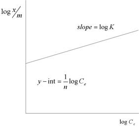
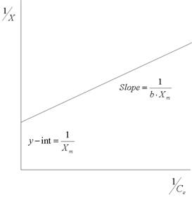

| Adsorption Equilibrium | |
| The process of adsorption can be respresented by the following chemical equation: | |
|
|
(6) |
| In this equation, A represents the adsorbate and B represents the adsorbent, such as the activated carbon particles. The A•B in the equation represents the combination of the adsorbate and the absorbent when the adsorbate is held to the adsorbent by chemical forces. The chemical equation that governs most adsorbates can be driven to equilibrium. In the reversible reaction an adsorbate will continue to accumulate on to the surface of the adsorbent until the rate of the forward reaction (adsorption) equals the rate of the reverse reaction (desorption). At this point, equilibrium has been achieved and further accumulation of the adsorbate will cease to continue (Pontius, 1990). | |
| Adsorption equilibrium can be more or less described by adsorption isotherms. An adsorption isotherm is a constant (iso-) temperature (-therm) equilibrium relationship between the quantity of adsorbate per unit of adsorbent and the equilibrium concentration of adsorbate in the solution. There are two widely used models for use in adsorption isotherms: the Langmuir and the Freundlich equations. The Freundlich equation was developed empirically, but can very accurately describe a wide range of adsorption data. The equation has the form: | |
 |
(7) |
 |
(8) |
| Where: |
| qe | = amount adsorbed per unit mass of carbon |
| x | = the amount of solute adsorbed |
| m | = the weight of adsorbent |
| Ce | = the solute equilibrium concentration |
| K | = constant, capacity of the adsorbent for the adsorbate |
| 1/n | = constant, measures the strength of adsorption, characteristic of the system |
| The Freundlich equation can be linearized to equation (9) and shown graphically as in Figure 3. | |
 |
(9) |
|  |
| Figure 3. Linearized Freudlich Adsorption Isotherm |
| The constants that are included in the equation have substantial importance when characterizing the adsorption system. The constant K is a function of the adsorption capacity of the specific adsorbent (usually various forms of activated carbon). The value of 1/n is a measure of the strength of adsorption. When holding all other variables constant, the value of solute adsorbed will increase with increasing K. For smaller values of 1/n, the stronger the adsorption bond will be for that specific adsorbate. Table 6 shows the Freudlich equation constants for a few selected compounds. |
| Table 6. Freudlich Adsorption Isotherm Constants for Selected Compounds at Neutral pH | ||
| Compound | K [mg/g] | 1/n |
| 1,4-Dichlorobenzene | 121 | 0.47 |
| Tetrachloroethane | 51 | 0.56 |
| Trichloroethene | 28 | 0.62 |
| Carbon Tetrachloride | 11 | 0.83 |
| 1,2-Dichloroethane | 3.6 | 0.83 |
| The Freundlich isotherm equation can also be used to determine the performance of the PAC (powdered activated carbon). The minimum amount of PAC required to achieve a removal of VOCs or THMs can be found using equation 10: | |
 |
(10) |
| Where: | |
| (PAC dose)min | = the minimum PAC dosage required (g/L) |
| C0 | = the concentration of the adsorbate in the influent |
| Ce | = the solute equilibrium concentration |
| qe | = amount adsorbed per unit mass of carbon |
| It is important to note that the Freundlich equation has some limitations. The main flaw of the equation can be seen as the system approaches saturation. In accordance with the mathematics of equation (8), the ratio of x:m will continue to increase with increasing solute equilibrium concentration. This, however, is not the case at saturation. At saturation, the ratio of x:m is a constant, independent of changes in the solute equilibrium concentration. At this point, the Freundlich equation will not accurately describe the system at hand. There is also no guarantee that the equations will accurately describe systems with concentrations les than the saturation concentration because of the empirical nature of the equation. |
| The other widely used adsorption isotherm model is called the Langmuir equation. This equation, unlike the Freudlich equation, is based primarily on a theoretical basis after a few underlying assumptions. These assumptions are grouped into what is known as the ideal localized monolayer model. Included in this model are: |
| - the surface of the adsorbent has definite sites where adsorbates are allowed to be adsorbed to; |
| - these definite sites can only hold one adsorbate molecules (monolayer); |
| - each site has a predetermined area established solely by the surface geometry; |
| - the energy associated with adsorption is the same at all the individual sites |
| - the adsorbates are assumed to be incapable of interacting with neighboring adsorbate molecules (Faust, 1983). |
| Taking into account these assumptions, the Langmuir equation is written in the form: |
 |
(11) |
| Where: |
| X | = the amount of solute adsorbed (x) per unit weight of adsorbent (m); x/m |
| Xm | = monolayer capacity; amount of solute adsorbed per unit weight of adsorbent required for monolayer coverage |
| Ce | = equilibrium concentration of the solute |
| b | = constant related to the energy of adsorption |
| The constants in equation (11) have a strong theoretical basis. Xm correlates the the surface concentration of monolayer coverage and denotes the maximum value of X that can be obtained ast he equilibrium concentration of the solute is increased. The other Langmuir equation constant, b, represents the energy associated with adsorption and increases as the strength of the adsorption bond increases. When the Langmuir equation is linearized as follows, the constant values in the equation can be determined from the graph. | |
 |
(12) |
 |
(13) |
| Figure 4. Linearized Langmuir Adsorption Isotherm | |
|  | |
| The determined values of the Langmuir constant are not typically valid for a large range of concentrations. This is mainly due to the assumptions made to simplify the mathematics. In a real activated carbon system, the surface of the carbon has a heterogeneous nature and is not monolayer. Also, the adsorbates will interact between neighboring molecules to some degree. Noting these assumptions of the Langmuir model, we can see that the Freundlich equation more accurately depicts the overall adsorption equilibrium. | |
| When looking at how changing conditions affect the adsorption equilibrium, competitive adsoportion plays an important role. This "competition" exists in the process of purifying water since there is not only a single compound that the activated carbon is adsorbing, but rather an assortment of compounds. When evaluating the performance of the adsorption of an adsorbate of interest, it can be largely inhibited byt he utilization of the carbon surface by the other competing compounds. Consequently it takes more carbon to get the same performance adsorbing a solution with an assortment of the adsorbable compounds than it would with the absence of the other compounds. The degree of the affect of competitive adsorption has on adsorption equilibrium depends largely on the properties responsible for the strength of the adsorption of the competing molecules. It is also affected by the concentration of the adsorbable compounds and the specifices of the activated carbon used. Competitive adsorption is a very common occurence and there has been isotherm models used to describe a system with numerous adsorbable compounds. Below is the Langmuir model for competitive adsorption in a multiadsorbate system: | |
 |
(14) |
 |
(15) |
| Where: | |
| X1 and X2 | = | the amount of solute (1 or 2) adsorbed per unit weight, per unit surface area of adsorbent at |
| equilibrium concentrations | ||
| Xm,1 and Xm,2 | = | maximum values of X1 and X2, respectively, that are obtained from single-solute isotherm analysis |
| which correspond to monolayer coverage of the adsorbent | ||
| b1 and b2 | = | constants that are a function of the energy of adsorption and are obtained from single-solute isotherm |
| analysis | ||
| The above equation assumes that the rate of adsorption at equilibrium is equal to the rate of desorption. It also assumes that all competing compounds have equal access to all adsorption sites. This assumption only holds true if the array of adsorbable compounds are similar in size and can all fit into the micropore structure. Usually this is not the case and therefore this isotherm model may not give the most accurate predictions. | |